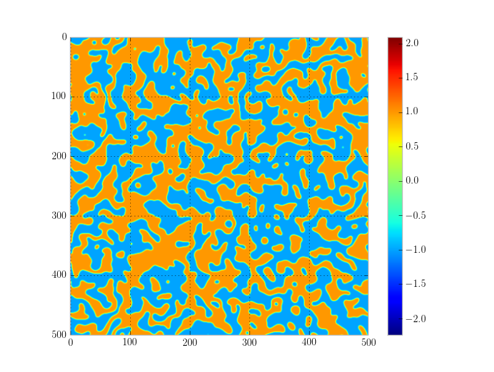

Welcome to the Model A simulator! In the narrowest sense this is a place to see a particular stochastic partial differential equation solved that is of the following form:
$$ \frac{\partial \phi (x,t)}{\partial t} = -M \left( W_o^2 \nabla^2 \phi - a_2 \phi - a_4 \phi^3 \right) + \zeta (x,t) $$
Where the driving force $\zeta(x,t)$ is a gaussian random variable with the following statistics:
$$ \left< \zeta(x,t) \right> = 0, \,\,\,\,\,\,
\left< \zeta(x_1, t_1) \zeta(x_2, t_2) \right> = 2 M k_b T \delta(x_2 - x_1) \delta(t_2 - t_1). $$
The importance of Model A or time-dependent Ginzburg-Landau equation is that it is model of the dynamics of a non-conserved order parameter.
To understand what is meant by this, consider for a moment the Ising model.
$$ \beta H = \sum_{\left< i, j \right>} J_{ij} \sigma_i \sigma_j + h \sum_i \sigma_i$$
The variables $\sigma$ are the spin angular momenta of individual atoms in a discrete lattice. At this point if you'd like to simulate the dynamics of a lattice you can impose one of two different types of kinetics: Glauber or Kawasaki.
In Glauber kinetics the total angular moment is not conserved. The free energy cost of a spin flip is calculated at any site and the probability of flipping is weighted accordingly.
Alternatively, in Kawasaki dynamics, the total angular momentum is conserved. Specifically the angular momentum is conserved locally by implimenting a set of kinetics that local rearranges a small domain of spins instead of flipping them. Again, the cost of all rearrangements is considered and probabilities of those rearrangements are weighted accordingly.
In Ginzburg-Landau theory, continuous fields are considered at the thermodynamic variables of interest. These field are almost always coarse grained variables from discrete systems. If we take the Ising model again, for example, we can construct a coase grained field from our discrete spins through an averaging process. Consider of ball of radius $R$ centered at position $x$. We can define a field $S(x)$ such that it is the average of all spins, $\sigma$, inside the ball. As radius of the ball increases the field becomes continuous and we've constructed a coarsed-grained order parameter.
Ginzburg-Landau theory considers the thermodynamics of such fields and once again, if we'd like to simulate the dynamics of such fields we are left with a choice between two different types of kinetics: conserved and non-conserved. The continuum version of our discrete Glauber kinetics is called model A. As we stated before it simulated the dynamics of a non-conserved order parameter.
For a general order parameter $\phi$ the equation of motion is written as:
$$ \frac{\partial \phi(x,t)}{\partial t} = - M \frac{\delta H[\phi]}{\delta \phi(x,t)} + \zeta (x,t) $$
Where the source term $\zeta$ follows the above mentioned statistics and $H[\phi]$ is the Ginzburg free energy functional of the system. In our case we'll use a simple $\phi^4$ model for the free energy functional:
$$ H_{\phi^4}[\phi] = \int d^d x \lbrace (W_o \nabla \phi)^2 + a_2 (\phi)^2 + a_4 (\phi)^4 \rbrace $$
All of the code is written in Julia (0.3 release should work) but also requires Python and a python package called Matplotlib .
To enable Matplotlib calls from Julia just install the PyPlot package inside the Julia shell via:
julia> Pkg.add("PyPlots")
Afterwards the simulation can be from the command line from the installation folder
> julia script.jl
Parameters can be changed inside the script.jl where the relevent parameters are commented.
This model code repository and set of notes was made by me to learn and help teach topics in thermodynamics. The notes and code are free to use and distribute so long as they are properly attributed to me (eg. don't pretend you made these please).